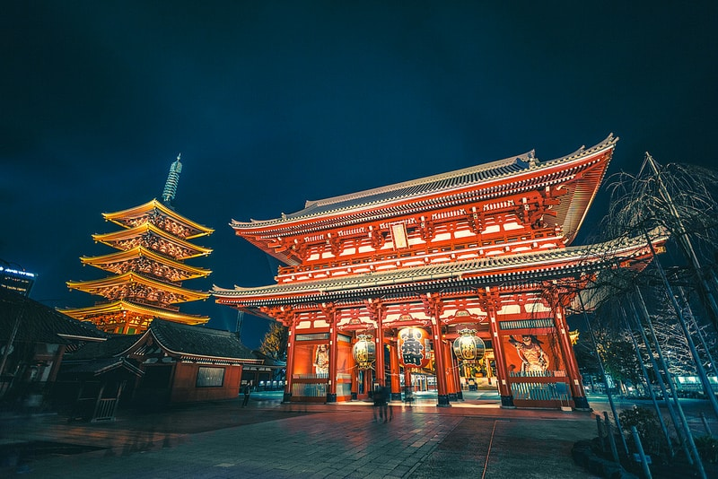

Temple Senso-ji
Le plus ancien temple de Tokyo, idéal pour découvrir l’histoire et la culture japonaise.
Tokyo, une ville où la tradition rencontre la modernité. Découvrez les meilleurs sites et quartiers pour explorer la capitale japonaise.
Le plus ancien temple de Tokyo, idéal pour découvrir l’histoire et la culture japonaise.
Un sanctuaire shinto entouré de forêt, un lieu paisible et spirituel en plein Tokyo.
Célèbre pour son carrefour très fréquenté et la statue de Hachiko.
Connu pour ses gratte-ciel, sa vie nocturne et son parc magnifique.
Un grand parc avec des musées, un zoo, et des cerisiers en fleurs au printemps.
Le plus grand musée du Japon, présentant l'art et l'histoire japonaise.
Conseils pour les transports, les saisons, et les habitudes culturelles à Tokyo.